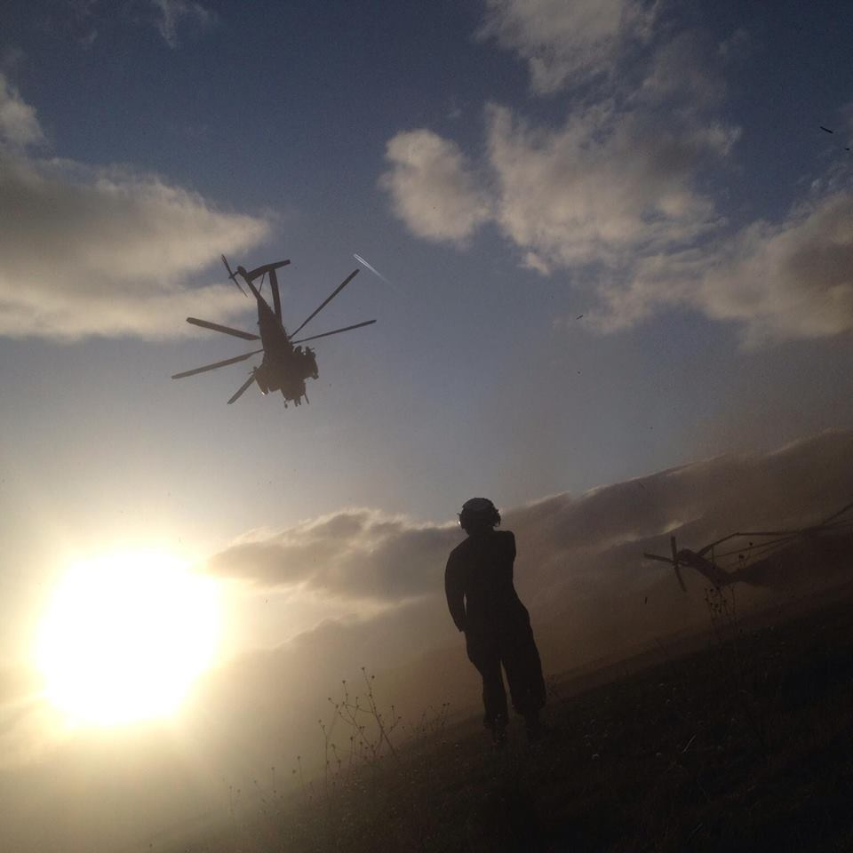

As a former Marine, I strive to be challenged and stay motivated. If i fail the challenge, I'll adapt and search for my faults until I can accomplish the challenge all while having a great time.
My Top 10 Hobbies
 The first time I put myself to the test was in bootcamp in 2009.
Some outstanding facts and experiences
The second time I was pushed to my limits was in 2013. I was in my first amateur fight in Muay Thai and matched against my close friend. He took it as an opportunity to hit me as hard as he could. I had to look into myself to see him as the enemy for the meantime and find a solution. I found his weak spot and won the match by first round TKO. That gave me a new perspective to solving a problem without bias.
The third even took place in my own head. I was on my last deployment with the worst leaders and coworkers anyone could ask for. Unfortunately, rank hierarchy prevented me from giving them their due justice and I had to find a way of coping with it. That's when I found poetry. I was able to write down everything I had bottled up and over the years found better ways to make it all sound better. Poetry helps me remain calm and keep my emotions to myself so I can maintain a professional profile and get a job done.